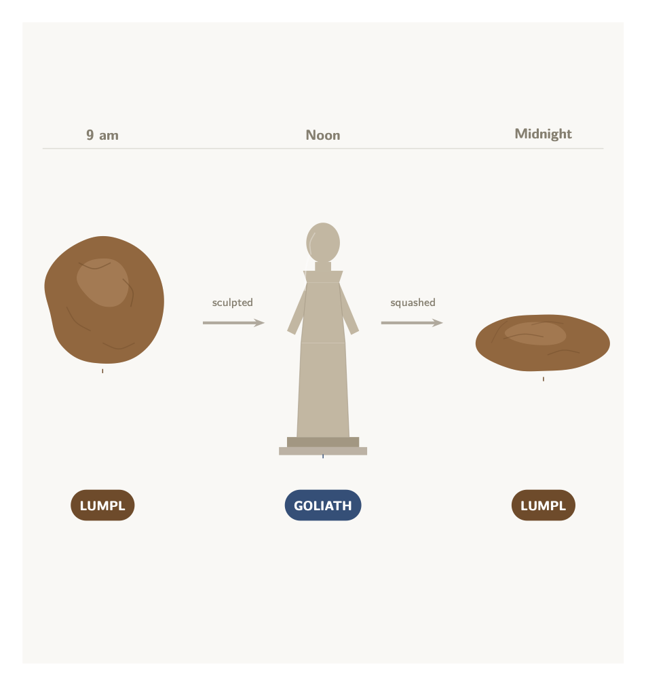

12 Material Constitution
We now focus on the problem of material constitution.
A sculptor creates a statue, which we may call Goliath, from a lump of clay, which we may call Lumpl, at noon. The lump of clay had been in the sculptor’s studio since at least 9 am before she decided to mold it into a statue. The statue is finally squashed at midnight at which point only the clay remains.

12.1 The Case Against Identity
The question now is whether Goliath is numerically identical to Lumpl.There are two potential answers one may give:
Goliath = Lumpl
There are powerful considerations for the Identity Thesis. For if there are two objects on the pedestal, then there is a remarkable correlation between them:
- Goliath and Lumpl share the same matter,
- Goliath and Lumpl are qualitatively identical, e.g., they exemplify the same shape, color, weight, etc.
- You need only move Lumpl if you want Goliath moved.
12.1.1 The Temporal Argument
On the other hand, we have an argument against the Identity Thesis:
- Lumpl existed before noon.
- Goliath did not exist before noon.
- Therefore, Goliath is numerically distinct from Lumpl.
The argument relies on an instance of Leibniz’s Law:
If \(x = y\), then for every quality \(Q\), \(y\) exemplifies \(Q\) if, and only if, \(x\) exemplifies \(Q\).
On the face of it, the fact that Lumpl existed at noon requires it to exemplify a temporal property not exemplified by Goliath. So, by Leibniz’s Law, the two are numerically distinct objects.
But the denial of the Identity Thesis is costly. You may be inclined to regard the following argument as a reductio of the view that Goliath and Lumpl are numerically distinct objects:
- If Goliath and Lumpl are qualitatively identical, then one is a statue if, and only if, the other is.
- Goliath and Lumpl are qualitatively identical.
- Goliath is a statue.
- Lumpl is a statue.
- If the Identity Thesis is false, then there are two statues on the pedestal at noon.
- There are two statues on the pedestal at noon.
The Identity Thesis provides a way out. Since Goliath is one and the same object as Lumpl, there is at most one statue on the pedestal. One way to make progress with the temporal argument is to deny that there is something Lumpl is that Goliath is not. Instead, we may respond that being a statue is a temporary property of the lump of clay.
Phase properties are properties objects have at one time (and time interval) and not at another. For example:
being married, being a student, being a teenager
No new object comes into existence when a given object becomes married or a student or a teenager. Instead, we would simply say that the given object comes to have a temporary property, which it may exemplify for a while.
12.1.2 The Modal Argument
There is another argument against the Identity Thesis.
Suppose that just before 1pm I decide to break off Goliath’s left arm and replace it with a new one. Then:
- Lumpl is not wholly on the pedestal at 1pm.
- Goliath is wholly on the pedestal at 1pm.
- Therefore, Goliath is numerically distinct from Lumpl.
This is again based on another application of Leibniz’s Law. For being wholly on the pedestal is a quality that Goliath but not Lumpl exemplifies at 1pm. The reason for this is that the lump of clay with which we began cannot survive the replacement of a portion of clay with another. On the other hand, the statue can indeed survive the replacement of an arm much like, for example, your car can survive the replacement of a windshield wiper.
Even if the replacement never takes place, we may still argue:
- Lumpl cannot survive the replacement of a bit of clay.
- Goliath can survive the replacement of a bit of clay.
- Therefore, Goliath is numerically distinct from Lumpl.
The modal argument is available in cases in which the statue and the clay happent to coincide for the duration of their respective careers.
A sculptor fills a mold with water and freezes it at noon. The result is an ice statue we may call Ice Goliath, which is made of some ice, which we may call Ice. The ice is finally left to melt at midnight at which point both Ice Goliath and Ice cease to exist at exactly the same time.
Notice that Ice Goliath and Ice exist at exactly the same times, which means that we cannot appeal the the standard temporal argument to distinguish them. Yet, the modal argument remains effective:
- Ice cannot survive the replacement of a bit of ice.
- Ice Goliath can survive the replacement of a bit of ice.
- Therefore, Ice Goliath is numerically distinct from Ice.
How would, by the way, a four-dimensionalist describe this case?
Once we abandon the Identity Thesis, we must endorse the view that there is some very intimate relation between the lump of clay and the statue at a time at which they coincide:
Lumpl materially constitutes Goliath at noon.
But what exactly is for a material object to constitute another at one time but not perhaps another? And why does Goliath not constitute Lumpl at noon?
12.2 Material Constitution
(Thomson 1983) outlines a proposal. She begins with the claim that not matter what two material objects \(x\) and \(y\) may be,
- \(x\) is part of \(y\) at a given time \(t\) if, and only if, \(x\) is exactly located at some subregion of the exact location of \(y\).
Thus for example, Goliath’s torso is, at noon, part of Goliath. Since Lumpl and Goliath share their exact spatial location, it follows that
Lumpl is part of Goliath at noon.
Goliath is part of Lumpl at noon.
(Thomson 1983) concludes:
If Lumpl materially constitutes Goliath at a time \(t\), then Lumpl and Goliath are part of one another at that time \(t\).
But the fact that Goliath and Lumpl are mutual parts at noon is not the end of the matter. For after all, Lumpl and Goliath are mutual parts at noon, yet Goliath does not constitute Lumpl at noon.
What is the difference between Goliath and Lumpl then?
- \(x\) is an essential part of \(y\) iff \(y\) cannot exist without \(x\) as a part.
Lumpl is very tightly bound to the portions of clay it has as parts. Take the portion of clay that makes up Goliath’s left arm, which we may call \(C\). The thought now is that \(C\) is an essential part of Lumpl. On the other hand, neither \(C\) nor parts of \(C\) are essential parts of Goliath, which can exist without them. That is the reason why Goliath, and not Lumpl, can survive the replacement of its left arm.
Some part of Lumpl (i) is essential to Lumpl, and such that (ii) none of its parts is essential to Goliath.
No part of Goliath is (i) essential to Goliath, and such that (ii) none of its parts is essential to Lumpl.
The thrust of the account is this:
Lumpl has some parts that are essential to it but not to the statue. That is, the statue, unlike Lumpl, can survive without them. On the other hand, Goliath has no parts that are essential to it but not to Lumpl. If Goliath cannot survive without a given part, then neither can Lumpl.
Here is how (Thomson 1983) puts it in p. 157:
In short, [Lumpl] is more tightly tied to its parts than [Goliath] is, and that is the ontological difference between them marked by saying that [Lumpl} is not identical with but merely constituted [Goliath].
12.3 The Proliferation Problem
According to the Consitution Thesis, there is more than one material object on the pedestal at noon. We have discussed at least two: Lumpl and Goliath, which differ with respect to their essential parts.
Could we not posit a third material object, which we may call Coloroth, which is exactly located where Lumpl and Goliath are and are made of the same matter they are. The difference is that unlike Goliath and Lumpl, Coloroth has a shade of terracotta as an essential color quality. Paint Coloroth white and it ceases to exist even if both Lumpl and Goliath survive.
Here is the argument against the identity of Coloroth and Goliath:
- Coloroth cannot survive being painted white.
- Goliath can survive being painted white.
- Therefore, Coloroth is numerically distinct from Goliath.
A similar argument should establish that Coloroth is numerically distinct from Lumpl. Nor is there reason to stop there. For each accidental quality of Goliath, there is a co-located material object, which exemplifies that quality essentially. So, something co-located with Goliath is essentially less than 20 kilograms but merely accidentally a shade of Terracotta; something else is essentially less than 40 cms tall but only accidentally less than 20 kilograms, etc.
On the other hand, note that it does follow from Thomson’s account that even if there is such a material object as Coloroth, absent a more complete mereological profile, it need not materially constitute, or be materially constituted by, Goliath.